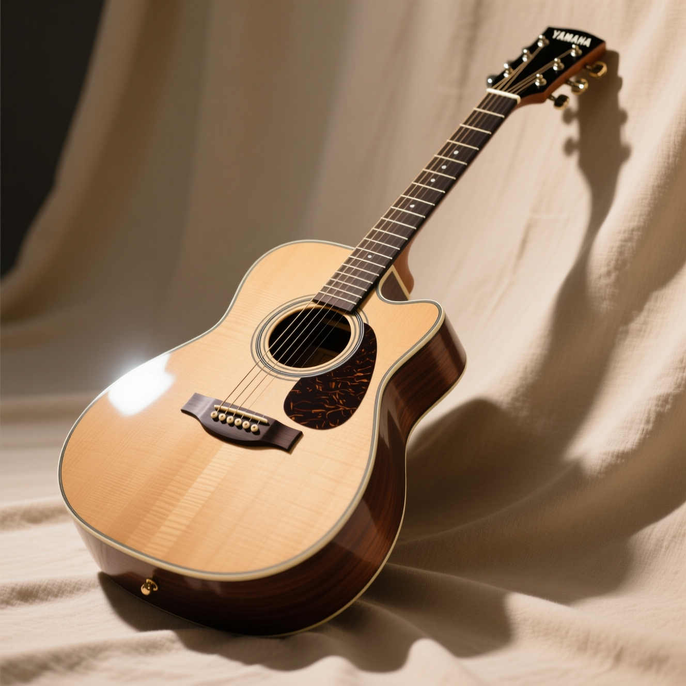
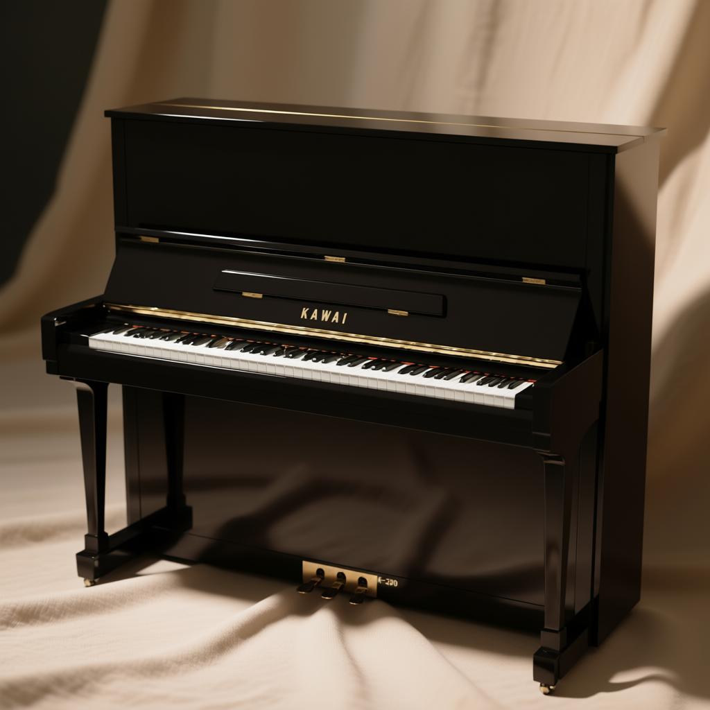
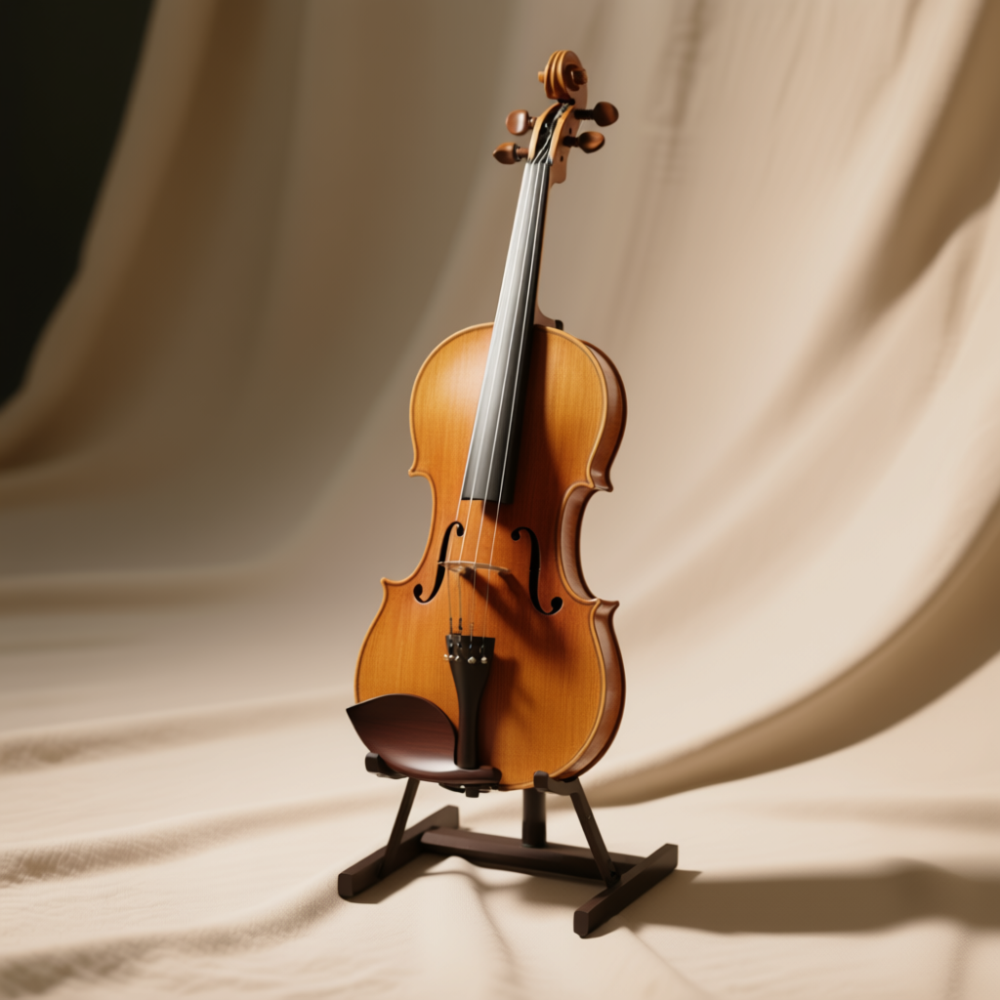

гитара Yamaha FG800
Надёжная и сбалансированная акустическая гитара от японского бренда Yamaha — идеальный выбор как для начинающих, так и для опытных гитаристов. Благодаря цельной еловой деке и качественной сборке инструмент обеспечивает насыщенное, чистое звучание и отличную проекцию. Комфортный гриф и стабильная настройка делают игру лёгкой и приятной.
Подробнее...

пианино Kawai K-300
Компактное и мощное цифровое пианино с 88-клавишной клавиатурой с молоточковым механизмом (PHA-4 Standard), обеспечивающим ощущение игры на настоящем акустическом рояле. Высококачествечнные звуки фортепиано, встроенные метроном и функция записи, а также возможность подключения к приложениям делают FP-10 отличным выбором для учёбы, репетиций и домашнего использования.
Подробнее...

скрипка Stentor Student II 4/4
Популярная модель для начинающих скрипачей, сочетающая высокое качество изготовления и доступную цену. Скрипка выполнена из отборной ели и клёна, оснащена качественной фурнитурой и уже готова к игре — в комплект входят смычок, канифоль и мягкий чехол. Отличный выбор для первых шагов в мире классической музыки.
Подробнее...